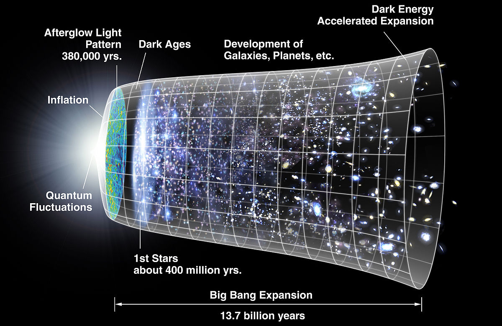

In the beginning the Universe was created. This had made many people very angry and has been widely regarded as a bad move.
- Douglas Adams
Afspil Dagens Afsnit:

Stikord:
The Big Bang:
Starten på Universet og Tiden. Det vides ikke, hvad der fik det til at ske, og vi ved ikke hvad der skete helt i starten af Universets historie.
Singularitet:
Et punkt med uendelig stor tæthed. Vores nuværende forståelse af fysikken giver ikke en tilstrækkelig forklaring af singulariteter.